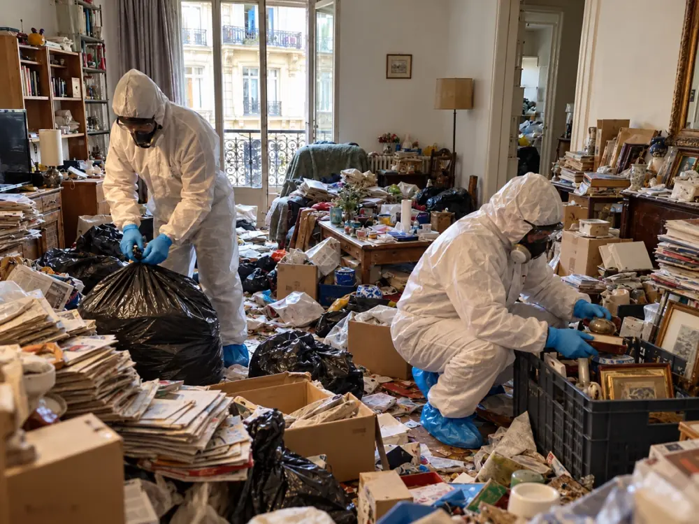
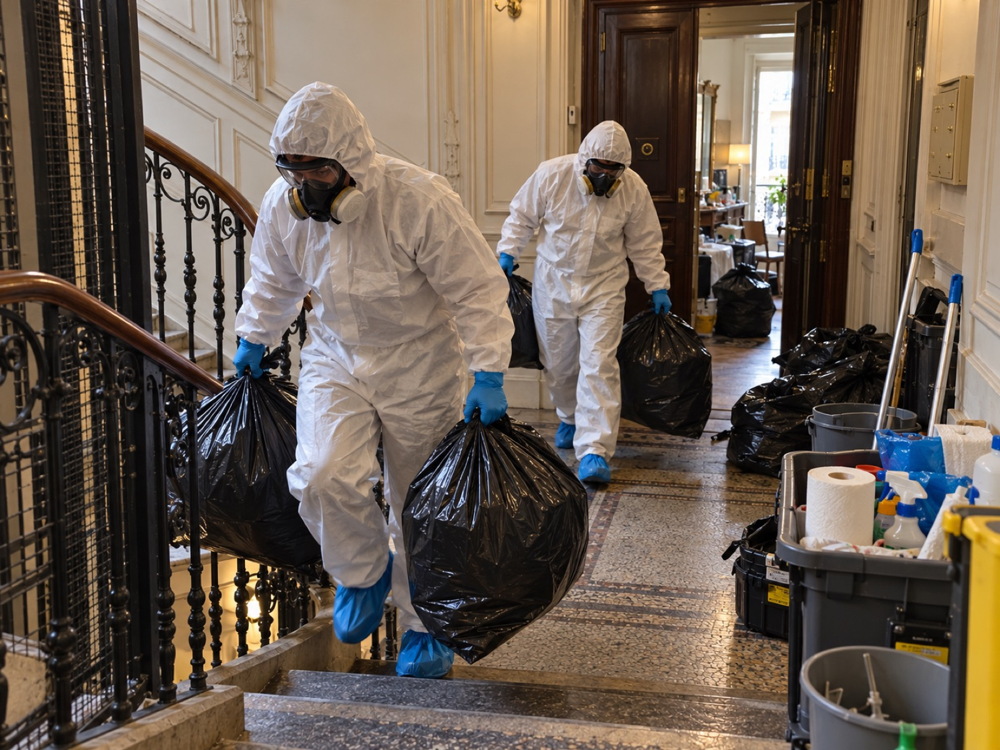
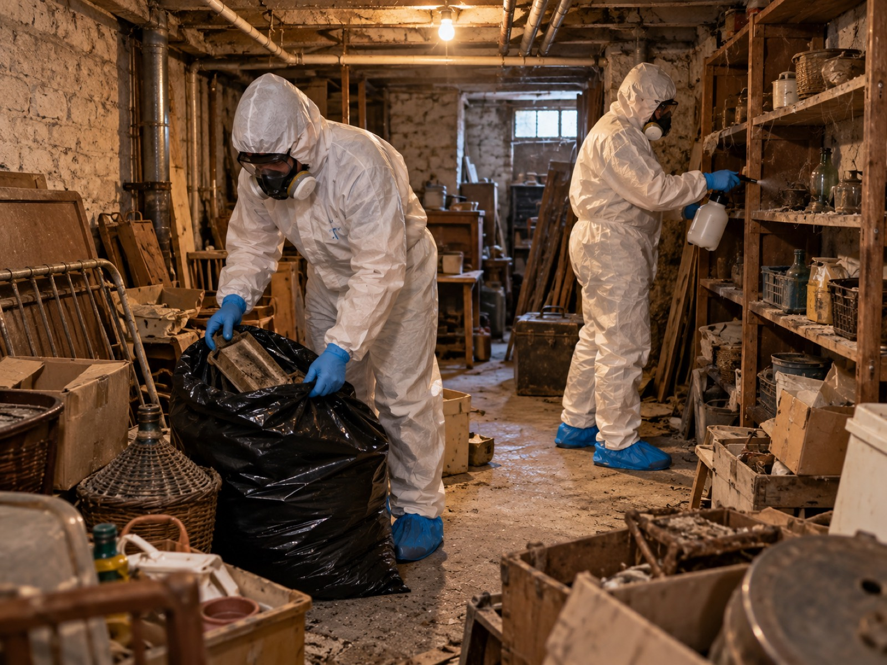
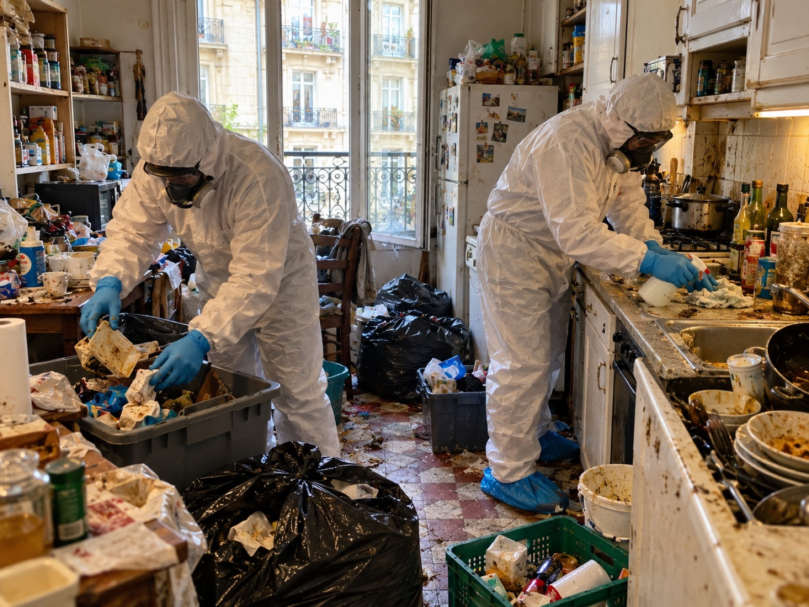
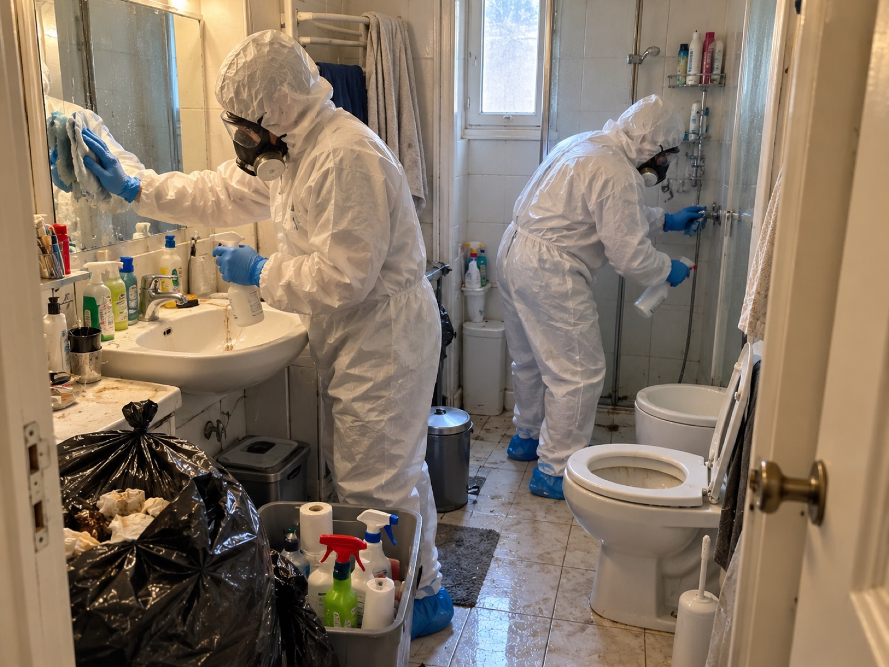
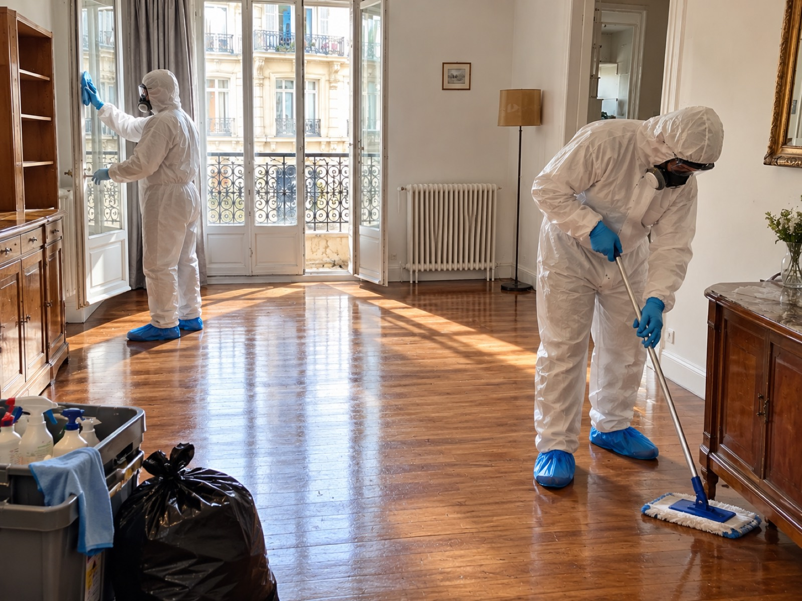
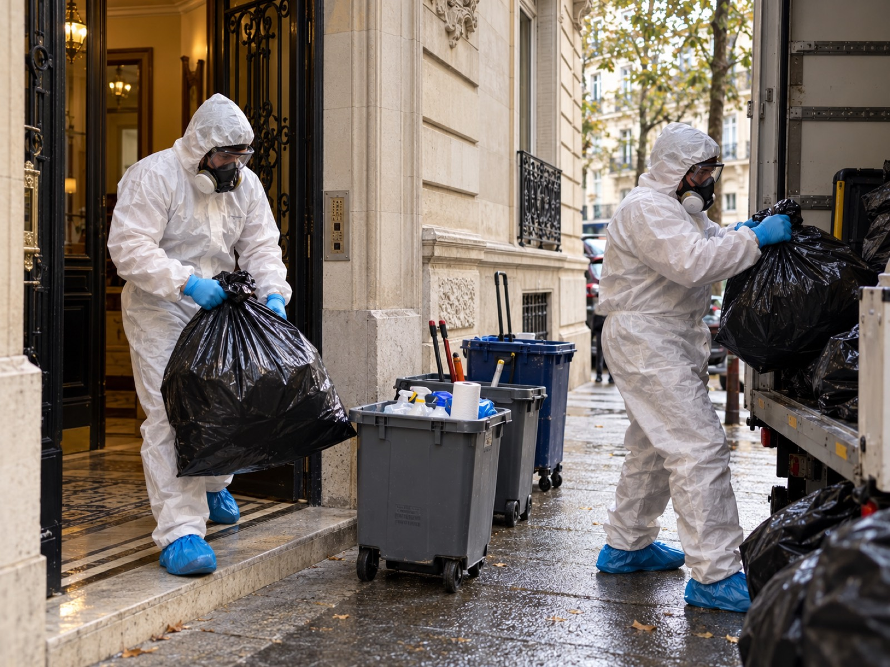

Nettoyage syndrome de Diogène à Paris 1er (75001)
Une intervention discrète, humaine et professionnelle pour retrouver un logement propre et sécurisé.
Le syndrome de Diogène peut entraîner une accumulation importante d’objets, de déchets et une dégradation progressive des conditions de vie. Face à cette situation souvent difficile pour la personne concernée et ses proches, Le XV du Nettoyage intervient à Paris 1er avec discrétion, respect et sans jugement.
Nos équipes spécialisées prennent en charge le tri des effets personnels, le débarras, le nettoyage en profondeur, la désinfection et le traitement des mauvaises odeurs. Chaque intervention est organisée avec soin, dans le respect de la personne et de ses biens.
gratuitvisite et chiffrage
Un logement saturé se vide avec méthode, pas en une journée de benne
Quand un appartement est rempli jusqu’au plafond, le premier réflexe est de tout jeter. C’est rarement la bonne idée : on risque de perdre des papiers importants, de brusquer la personne et de voir le logement se remplir à nouveau.
Le syndrome de Diogène se traduit dans un logement par une accumulation d’objets, de papiers et parfois de déchets, avec un entretien qui se dégrade sur des mois ou des années. Poser un diagnostic revient à un médecin. Notre métier à nous, c’est le logement : rendre l’espace praticable, sain et sûr.
À Paris 1er (75001), nous prenons en charge le nettoyage Diogène d’un appartement, d’un studio ou d’une chambre de service : tri, débarras, nettoyage en profondeur, désinfection et traitement des odeurs. La visite et le devis sont gratuits.
- Visite sur place et devis écrit avant toute intervention
- Tri des papiers, de l’argent, des bijoux et des souvenirs
- Évacuation, nettoyage, désinfection et traitement des odeurs
- Équipes en tenue de protection, camion sans logo

Débarrasser un appartement Diogène dans un immeuble ancien du centre de Paris
Le 1er arrondissement compte beaucoup d’immeubles anciens, de petites surfaces et d’étages sans ascenseur. Sortir plusieurs mètres cubes par un escalier étroit se prépare : nombre de rotations, matériel de portage, protection des marches et de la rampe, passage des sacs sans toucher les parties communes.
Nous passons par l’adresse, l’étage, la largeur de l’escalier et la présence d’un ascenseur lors de la visite. C’est ce qui permet de chiffrer juste et de prévoir l’équipe qu’il faut, plutôt que de découvrir le problème le jour du chantier.
Le stationnement d’un véhicule de chantier est l’autre point à régler à l’avance. Le centre de Paris est couvert par une zone à trafic limité depuis novembre 2024 : nous vérifions avec vous l’horaire et les conditions d’accès avant la date d’intervention.

Le déroulé d’un nettoyage Diogène, étape par étape
Chaque intervention suit le même ordre. Vous savez ce qui va se passer, dans quel ordre, et ce qui est inclus dans le prix.
Visite gratuite
Nous évaluons les pièces, l’accès, le volume à évacuer et l’état sanitaire. Si la personne ou la famille est d’accord, nous prenons quelques photos pour le compte rendu.
Devis écrit
Il détaille ce qui est inclus : évacuation, tri, nettoyage, désinfection, remise en état. Rien ne commence sans votre accord.
Mise en sécurité
Nous dégageons d’abord les accès, la sortie, le lit, l’eau et le chauffage, et nous retirons ce qui représente un risque d’incendie ou de chute.
Tri et débarras
Papiers, argent, bijoux et souvenirs sont mis de côté. Ce qui est périmé, cassé ou souillé est évacué.
Nettoyage et désinfection
Sols, murs, cuisine, salle de bain, sanitaires et textiles sont traités, puis les odeurs à la source.
Compte rendu
Vous recevez une facture détaillée et un point sur l’état final du logement, pièce par pièce.
Pour le détail de notre façon de travailler, consultez la page méthode.
Trier avant d’évacuer : ce qui compte est conservé
Dans un logement Diogène, tout n’est pas à jeter. Entre les journaux, les emballages et les objets cassés se cachent des relevés bancaires, des clés, des médicaments, des papiers d’identité, des photos de famille, parfois de l’argent liquide ou des bijoux.
Nous trions donc pièce par pièce, selon les consignes convenues avant l’intervention : documents administratifs, papiers d’identité, argent et bijoux, photographies et souvenirs, clés et objets personnels importants sont identifiés et conservés, puis remis à la personne, à la famille ou au mandataire. Ce qui est périmé, cassé ou souillé part en évacuation. Si un objet de valeur apparaît ou si l’évacuation d’un objet fait débat, le tri concerné est suspendu jusqu’à clarification.
Le débarras ne s’arrête pas au séjour. Cave, cellier, chambre de service, balcon : ces pièces annexes se remplissent souvent en premier et sont comprises dans le devis si vous nous les signalez à la visite.

Après le débarras, le logement doit encore être assaini
Un logement vidé n’est pas un logement sain. Les déchets organiques, l’humidité, les denrées périmées et les déjections laissent des traces dans les sols, les joints, les matelas et les textiles.
Nous nettoyons en profondeur, désinfectons les surfaces, traitons les odeurs à la source et signalons la présence de cafards, de rongeurs ou de punaises de lit. Le traitement des nuisibles lui-même relève d’un professionnel de la dératisation ou de la désinsectisation : nous vous en parlons pendant la visite et nous coordonnons le passage si besoin.


Une remise en propreté soignée, adaptée à l’état du logement
Selon le devis, nous réalisons le tri et la conservation des effets personnels, le débarras et l’évacuation des déchets, le nettoyage approfondi, la désinfection adaptée aux surfaces et le traitement des sources de mauvaises odeurs. Les espaces concernés sont remis en propreté : sols et parquet, murs et menuiseries, fenêtres et radiateurs.
Une fois le logement vidé, certaines dégradations peuvent apparaître : parquet abîmé, humidité, moisissures, électricité, plomberie ou revêtements endommagés. Nous vous en informons, et les travaux complémentaires éventuels font l’objet d’un devis séparé.
- Sols, parquet, murs, vitres et radiateurs nettoyés selon le devis
- Désinfection adaptée aux surfaces concernées
- Compte rendu final indiquant l’état de chaque pièce, et facture détaillée

Prix d’un nettoyage Diogène à Paris 1er : de quoi dépend le devis
Il n’existe pas de tarif unique : deux logements de même surface peuvent demander des durées très différentes. Voici ce qui fait varier le prix, et ce que nous regardons pendant la visite.
Surface et pièces
Un studio ne se chiffre pas comme un quatre-pièces. Les annexes (cave, chambre de service) comptent aussi.
Volume à évacuer
Le nombre de mètres cubes et le poids des déchets déterminent le temps de tri, de portage et de transport.
Étage et accès
Étage élevé, absence d’ascenseur, escalier étroit, distance jusqu’au camion : tout cela allonge le chantier.
Niveau d’encrassement
Un simple encombrement et un logement souillé n’appellent pas le même niveau de nettoyage ni de désinfection.
Nuisibles et moisissures
La présence de cafards, de rongeurs, de punaises ou de moisissures demande un traitement spécialisé, à prévoir en plus.
Remise en état
Peinture, sols ou petits travaux éventuels sont chiffrés séparément, avec votre accord.
Nous chiffrons après la visite, par écrit et gratuitement. Les prestations réalisées dépendent de l’état du logement et du devis accepté : tri et débarras, nettoyage approfondi, désinfection et traitement des odeurs lorsque nécessaires, puis travaux complémentaires éventuels, chiffrés séparément. Pour comprendre comment se construit un devis, consultez notre page tarifs.
Comment choisir une entreprise de nettoyage Diogène
Pour une intervention aussi sensible, comparez plusieurs devis écrits. Un bon devis dit ce qui est inclus et ce qui ne l’est pas. Voici ce qu’il faut vérifier avant de signer :
- Le numéro SIRET de l’entreprise et son assurance responsabilité civile professionnelle
- Ce que le prix comprend : tri, évacuation, frais de déchetterie, désinfection
- La façon dont les objets personnels, les papiers et les valeurs sont traités
- La visite sur place : un prix donné par téléphone, sans visite, est rarement tenu
- La discrétion : camion sans logo, équipes sans commentaire sur l’immeuble

Famille, voisin, propriétaire, tuteur : comment agir
Ce sont souvent des enfants, un frère ou une sœur, un voisin, un propriétaire, un syndic, un tuteur ou une assistante sociale. La situation est connue depuis longtemps et un événement force à agir : un signalement, une odeur, une fuite, une vente, un décès, une hospitalisation.
La personne est d’accord
Nous organisons une visite avec la personne concernée ou les personnes habilitées à l’accompagner. Nous expliquons le déroulement du nettoyage et identifions les objets à conserver. Nous trions ensemble, dans le respect de ses souhaits, de ses souvenirs et de ses effets personnels.
La personne refuse
Ne forcez pas. Parlez-en à son médecin traitant, au service social ou à son représentant légal. Nous n’intervenons pas dans le dos d’un occupant.
La personne est en danger
Si la vie ou la santé de quelqu’un est menacée, appelez les secours. Nous intervenons ensuite sur l’état du logement.
Votre logement est insalubre sans que ce soit un syndrome de Diogène ? Consultez notre page logement insalubre.
Nettoyage Diogène à Paris 1er : vos questions
Combien coûte un nettoyage Diogène à Paris 1er ?
Le prix dépend de la surface, du volume à évacuer, de l’étage et de l’accès, de la présence de nuisibles et du niveau de désinfection. Nous le chiffrons après une visite gratuite et remettons un devis écrit avant toute intervention.
Peut-on faire nettoyer le logement d’une personne atteinte du syndrome de Diogène sans son accord ?
Non, pas sans base légale suffisante. Le syndrome de Diogène ne retire pas automatiquement à une personne sa capacité juridique : ses droits et sa dignité doivent être respectés. Même sous curatelle ou sous tutelle, elle conserve des droits et une part d’autonomie, et il faut vérifier la mesure de protection et les pouvoirs de la personne qui en est chargée. L’accord d’un proche ou d’un propriétaire ne suffit pas toujours, et certaines situations relèvent d’une décision du juge ou d’une autorité. En cas de refus ou de conflit, nous n’intervenons pas : nous vous orientons vers le médecin traitant, le service social ou le représentant légal.
Peut-on garder les objets importants lors du débarras ?
Oui, c’est un principe de notre méthode : papiers, argent, bijoux, photos et souvenirs sont identifiés selon les consignes convenues avant l’intervention, puis remis à la personne ou à la famille. Si un objet fait débat, le tri est suspendu jusqu’à clarification.
Le camion et les équipes sont-ils discrets dans le 1er arrondissement ?
Oui. Le camion est sans logo et les équipes interviennent en tenue de protection sans commentaire sur l’immeuble. Nous parlons de la date et de l’accès avec vous à l’avance.
Êtes-vous une entreprise de nettoyage Diogène ou une entreprise de débarras ?
Les deux, car un logement Diogène demande de trier et d’évacuer avant de pouvoir nettoyer et désinfecter. Nous prenons en charge le débarras, le nettoyage, la désinfection et la remise en état.
Intervenez-vous aussi dans une maison ou un appartement insalubre à Paris 1er ?
Oui. Un logement insalubre sans syndrome de Diogène relève d’une page à part : nettoyage, désinfection et débarras de logement insalubre à Paris.
Un appel, un devis gratuit à Paris 1er
Donnez l’adresse, l’étage, le type de logement et si une personne y vit. Quelques photos par SMS permettent de chiffrer plus vite. Tout reste confidentiel.
07 57 83 26 26